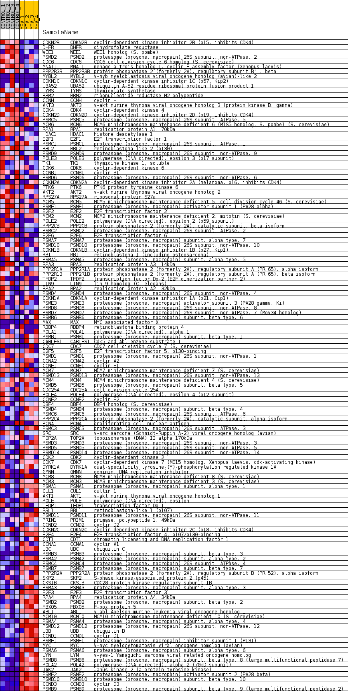
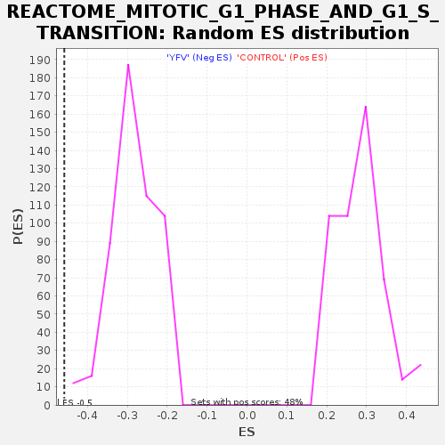

Profile of the Running ES Score & Positions of GeneSet Members on the Rank Ordered List
| Dataset | MATRIZ_GSE99081_collapsed_to_symbols.gsea_CLASE_99081.cls#CONTROL_versus_YFV |
| Phenotype | gsea_CLASE_99081.cls#CONTROL_versus_YFV |
| Upregulated in class | YFV |
| GeneSet | REACTOME_MITOTIC_G1_PHASE_AND_G1_S_TRANSITION |
| Enrichment Score (ES) | -0.45848733 |
| Normalized Enrichment Score (NES) | -1.6126037 |
| Nominal p-value | 0.0 |
| FDR q-value | 0.06397023 |
| FWER p-Value | 0.865 |
| SYMBOL | TITLE | RANK IN GENE LIST | RANK METRIC SCORE | RUNNING ES | CORE ENRICHMENT | |
|---|---|---|---|---|---|---|
| 1 | CDKN2B | cyclin-dependent kinase inhibitor 2B (p15, inhibits CDK4) | 73 | 1.392 | 0.0194 | No |
| 2 | DHFR | dihydrofolate reductase | 273 | 0.972 | 0.0237 | No |
| 3 | WEE1 | WEE1 homolog (S. pombe) | 558 | 0.801 | 0.0198 | No |
| 4 | PSMD2 | proteasome (prosome, macropain) 26S subunit, non-ATPase, 2 | 711 | 0.738 | 0.0231 | No |
| 5 | CDC6 | CDC6 cell division cycle 6 homolog (S. cerevisiae) | 1376 | 0.555 | -0.0086 | No |
| 6 | MNAT1 | menage a trois homolog 1, cyclin H assembly factor (Xenopus laevis) | 1532 | 0.524 | -0.0092 | No |
| 7 | PPP2R3B | protein phosphatase 2 (formerly 2A), regulatory subunit B'', beta | 1565 | 0.517 | -0.0023 | No |
| 8 | MYBL2 | v-myb myeloblastosis viral oncogene homolog (avian)-like 2 | 1789 | 0.500 | -0.0076 | No |
| 9 | CDKN1C | cyclin-dependent kinase inhibitor 1C (p57, Kip2) | 1891 | 0.497 | -0.0053 | No |
| 10 | UBA52 | ubiquitin A-52 residue ribosomal protein fusion product 1 | 1969 | 0.488 | -0.0017 | No |
| 11 | TYMS | thymidylate synthetase | 2118 | 0.466 | -0.0029 | No |
| 12 | RRM2 | ribonucleotide reductase M2 polypeptide | 2249 | 0.449 | -0.0033 | No |
| 13 | CCNH | cyclin H | 2363 | 0.431 | -0.0029 | No |
| 14 | AKT3 | v-akt murine thymoma viral oncogene homolog 3 (protein kinase B, gamma) | 2398 | 0.426 | 0.0023 | No |
| 15 | CDK4 | cyclin-dependent kinase 4 | 2745 | 0.376 | -0.0127 | No |
| 16 | CDKN2D | cyclin-dependent kinase inhibitor 2D (p19, inhibits CDK4) | 3013 | 0.341 | -0.0235 | No |
| 17 | PSMC5 | proteasome (prosome, macropain) 26S subunit, ATPase, 5 | 3127 | 0.329 | -0.0248 | No |
| 18 | MCM6 | MCM6 minichromosome maintenance deficient 6 (MIS5 homolog, S. pombe) (S. cerevisiae) | 3196 | 0.320 | -0.0235 | No |
| 19 | RPA1 | replication protein A1, 70kDa | 3464 | 0.292 | -0.0351 | No |
| 20 | HDAC1 | histone deacetylase 1 | 3484 | 0.291 | -0.0313 | No |
| 21 | E2F1 | E2F transcription factor 1 | 3531 | 0.286 | -0.0292 | No |
| 22 | PSMC1 | proteasome (prosome, macropain) 26S subunit, ATPase, 1 | 3697 | 0.267 | -0.0349 | No |
| 23 | RBL2 | retinoblastoma-like 2 (p130) | 3712 | 0.265 | -0.0312 | No |
| 24 | PSMD9 | proteasome (prosome, macropain) 26S subunit, non-ATPase, 9 | 3732 | 0.263 | -0.0279 | No |
| 25 | POLE3 | polymerase (DNA directed), epsilon 3 (p17 subunit) | 3752 | 0.262 | -0.0246 | No |
| 26 | TK1 | thymidine kinase 1, soluble | 3769 | 0.260 | -0.0211 | No |
| 27 | CDK6 | cyclin-dependent kinase 6 | 3873 | 0.252 | -0.0231 | No |
| 28 | CCNB1 | cyclin B1 | 3893 | 0.251 | -0.0200 | No |
| 29 | PSMD6 | proteasome (prosome, macropain) 26S subunit, non-ATPase, 6 | 3986 | 0.243 | -0.0215 | No |
| 30 | CDKN2A | cyclin-dependent kinase inhibitor 2A (melanoma, p16, inhibits CDK4) | 4000 | 0.243 | -0.0182 | No |
| 31 | PTK6 | PTK6 protein tyrosine kinase 6 | 4098 | 0.235 | -0.0202 | No |
| 32 | AKT2 | v-akt murine thymoma viral oncogene homolog 2 | 4123 | 0.233 | -0.0176 | No |
| 33 | RPS27A | ribosomal protein S27a | 4134 | 0.232 | -0.0143 | No |
| 34 | MCM5 | MCM5 minichromosome maintenance deficient 5, cell division cycle 46 (S. cerevisiae) | 4252 | 0.224 | -0.0177 | No |
| 35 | PSME1 | proteasome (prosome, macropain) activator subunit 1 (PA28 alpha) | 4391 | 0.212 | -0.0226 | No |
| 36 | E2F2 | E2F transcription factor 2 | 4474 | 0.205 | -0.0242 | No |
| 37 | MCM2 | MCM2 minichromosome maintenance deficient 2, mitotin (S. cerevisiae) | 4554 | 0.197 | -0.0257 | No |
| 38 | POLE2 | polymerase (DNA directed), epsilon 2 (p59 subunit) | 4611 | 0.190 | -0.0259 | No |
| 39 | PPP2CB | protein phosphatase 2 (formerly 2A), catalytic subunit, beta isoform | 4683 | 0.184 | -0.0272 | No |
| 40 | PSMC2 | proteasome (prosome, macropain) 26S subunit, ATPase, 2 | 4826 | 0.173 | -0.0330 | No |
| 41 | E2F6 | E2F transcription factor 6 | 4966 | 0.162 | -0.0389 | No |
| 42 | PSMA7 | proteasome (prosome, macropain) subunit, alpha type, 7 | 5238 | 0.134 | -0.0534 | No |
| 43 | PSMD10 | proteasome (prosome, macropain) 26S subunit, non-ATPase, 10 | 5332 | 0.127 | -0.0570 | No |
| 44 | CDKN1B | cyclin-dependent kinase inhibitor 1B (p27, Kip1) | 5533 | 0.111 | -0.0675 | No |
| 45 | RB1 | retinoblastoma 1 (including osteosarcoma) | 5587 | 0.107 | -0.0689 | No |
| 46 | PSMA5 | proteasome (prosome, macropain) subunit, alpha type, 5 | 5659 | 0.102 | -0.0716 | No |
| 47 | RPA3 | replication protein A3, 14kDa | 5730 | 0.095 | -0.0743 | No |
| 48 | PPP2R1A | protein phosphatase 2 (formerly 2A), regulatory subunit A (PR 65), alpha isoform | 5796 | 0.091 | -0.0768 | No |
| 49 | PPP2R1B | protein phosphatase 2 (formerly 2A), regulatory subunit A (PR 65), beta isoform | 5866 | 0.087 | -0.0796 | No |
| 50 | TFDP2 | transcription factor Dp-2 (E2F dimerization partner 2) | 6061 | 0.071 | -0.0904 | No |
| 51 | LIN9 | lin-9 homolog (C. elegans) | 6142 | 0.065 | -0.0943 | No |
| 52 | RPA2 | replication protein A2, 32kDa | 6313 | 0.052 | -0.1039 | No |
| 53 | PSMD4 | proteasome (prosome, macropain) 26S subunit, non-ATPase, 4 | 6348 | 0.049 | -0.1052 | No |
| 54 | CDKN1A | cyclin-dependent kinase inhibitor 1A (p21, Cip1) | 6633 | 0.031 | -0.1223 | No |
| 55 | PSME3 | proteasome (prosome, macropain) activator subunit 3 (PA28 gamma; Ki) | 6661 | 0.029 | -0.1235 | No |
| 56 | PSMD8 | proteasome (prosome, macropain) 26S subunit, non-ATPase, 8 | 6710 | 0.026 | -0.1260 | No |
| 57 | PSMD7 | proteasome (prosome, macropain) 26S subunit, non-ATPase, 7 (Mov34 homolog) | 6854 | 0.018 | -0.1346 | No |
| 58 | PSMB6 | proteasome (prosome, macropain) subunit, beta type, 6 | 7048 | 0.008 | -0.1464 | No |
| 59 | MAX | MYC associated factor X | 9266 | -0.000 | -0.2841 | No |
| 60 | RBBP4 | retinoblastoma binding protein 4 | 9275 | -0.000 | -0.2846 | No |
| 61 | POLA1 | polymerase (DNA directed), alpha 1 | 9515 | -0.003 | -0.2994 | No |
| 62 | PSMB1 | proteasome (prosome, macropain) subunit, beta type, 1 | 9745 | -0.014 | -0.3134 | No |
| 63 | CABLES1 | Cdk5 and Abl enzyme substrate 1 | 9756 | -0.014 | -0.3137 | No |
| 64 | CDC7 | CDC7 cell division cycle 7 (S. cerevisiae) | 9882 | -0.021 | -0.3211 | No |
| 65 | E2F5 | E2F transcription factor 5, p130-binding | 10056 | -0.028 | -0.3314 | No |
| 66 | PSMD1 | proteasome (prosome, macropain) 26S subunit, non-ATPase, 1 | 10102 | -0.030 | -0.3337 | No |
| 67 | CCNA2 | cyclin A2 | 10224 | -0.039 | -0.3405 | No |
| 68 | CCNE1 | cyclin E1 | 10228 | -0.039 | -0.3400 | No |
| 69 | MCM7 | MCM7 minichromosome maintenance deficient 7 (S. cerevisiae) | 10398 | -0.051 | -0.3497 | No |
| 70 | PSMD13 | proteasome (prosome, macropain) 26S subunit, non-ATPase, 13 | 10422 | -0.053 | -0.3502 | No |
| 71 | MCM4 | MCM4 minichromosome maintenance deficient 4 (S. cerevisiae) | 10445 | -0.056 | -0.3506 | No |
| 72 | PSMB5 | proteasome (prosome, macropain) subunit, beta type, 5 | 10473 | -0.058 | -0.3513 | No |
| 73 | CDC25A | cell division cycle 25A | 10529 | -0.062 | -0.3536 | No |
| 74 | POLE4 | polymerase (DNA-directed), epsilon 4 (p12 subunit) | 10546 | -0.063 | -0.3535 | No |
| 75 | CCNE2 | cyclin E2 | 10646 | -0.070 | -0.3584 | No |
| 76 | DBF4 | DBF4 homolog (S. cerevisiae) | 10722 | -0.077 | -0.3618 | No |
| 77 | PSMB4 | proteasome (prosome, macropain) subunit, beta type, 4 | 10839 | -0.088 | -0.3675 | No |
| 78 | PSMC6 | proteasome (prosome, macropain) 26S subunit, ATPase, 6 | 11010 | -0.102 | -0.3763 | No |
| 79 | PPP2CA | protein phosphatase 2 (formerly 2A), catalytic subunit, alpha isoform | 11059 | -0.106 | -0.3774 | No |
| 80 | PCNA | proliferating cell nuclear antigen | 11249 | -0.124 | -0.3870 | No |
| 81 | PSMC3 | proteasome (prosome, macropain) 26S subunit, ATPase, 3 | 11528 | -0.149 | -0.4017 | No |
| 82 | SRC | v-src sarcoma (Schmidt-Ruppin A-2) viral oncogene homolog (avian) | 11630 | -0.158 | -0.4053 | No |
| 83 | TOP2A | topoisomerase (DNA) II alpha 170kDa | 11741 | -0.168 | -0.4092 | No |
| 84 | PSMD3 | proteasome (prosome, macropain) 26S subunit, non-ATPase, 3 | 11846 | -0.178 | -0.4126 | No |
| 85 | PSMD5 | proteasome (prosome, macropain) 26S subunit, non-ATPase, 5 | 11911 | -0.185 | -0.4134 | No |
| 86 | PSMD14 | proteasome (prosome, macropain) 26S subunit, non-ATPase, 14 | 11924 | -0.186 | -0.4110 | No |
| 87 | CDK2 | cyclin-dependent kinase 2 | 12173 | -0.211 | -0.4227 | No |
| 88 | CDK7 | cyclin-dependent kinase 7 (MO15 homolog, Xenopus laevis, cdk-activating kinase) | 12316 | -0.226 | -0.4277 | No |
| 89 | DYRK1A | dual-specificity tyrosine-(Y)-phosphorylation regulated kinase 1A | 12490 | -0.243 | -0.4342 | No |
| 90 | GMNN | geminin, DNA replication inhibitor | 12509 | -0.246 | -0.4311 | No |
| 91 | MCM8 | MCM8 minichromosome maintenance deficient 8 (S. cerevisiae) | 12540 | -0.249 | -0.4287 | No |
| 92 | MCM3 | MCM3 minichromosome maintenance deficient 3 (S. cerevisiae) | 12723 | -0.268 | -0.4354 | No |
| 93 | PSMA1 | proteasome (prosome, macropain) subunit, alpha type, 1 | 12891 | -0.287 | -0.4409 | No |
| 94 | CUL1 | cullin 1 | 12992 | -0.300 | -0.4419 | No |
| 95 | AKT1 | v-akt murine thymoma viral oncogene homolog 1 | 13167 | -0.324 | -0.4472 | No |
| 96 | POLE | polymerase (DNA directed), epsilon | 13253 | -0.334 | -0.4467 | No |
| 97 | TFDP1 | transcription factor Dp-1 | 13257 | -0.335 | -0.4412 | No |
| 98 | RBL1 | retinoblastoma-like 1 (p107) | 13537 | -0.369 | -0.4521 | Yes |
| 99 | PSMD11 | proteasome (prosome, macropain) 26S subunit, non-ATPase, 11 | 13564 | -0.374 | -0.4473 | Yes |
| 100 | PRIM1 | primase, polypeptide 1, 49kDa | 13572 | -0.376 | -0.4413 | Yes |
| 101 | CCND2 | cyclin D2 | 13584 | -0.378 | -0.4355 | Yes |
| 102 | CDKN2C | cyclin-dependent kinase inhibitor 2C (p18, inhibits CDK4) | 13588 | -0.378 | -0.4292 | Yes |
| 103 | E2F4 | E2F transcription factor 4, p107/p130-binding | 13670 | -0.390 | -0.4275 | Yes |
| 104 | CDT1 | chromatin licensing and DNA replication factor 1 | 13818 | -0.414 | -0.4295 | Yes |
| 105 | CCNA1 | cyclin A1 | 13876 | -0.422 | -0.4258 | Yes |
| 106 | UBC | ubiquitin C | 14182 | -0.479 | -0.4365 | Yes |
| 107 | PSMB3 | proteasome (prosome, macropain) subunit, beta type, 3 | 14438 | -0.500 | -0.4438 | Yes |
| 108 | PSMA2 | proteasome (prosome, macropain) subunit, alpha type, 2 | 14672 | -0.535 | -0.4490 | Yes |
| 109 | PSMC4 | proteasome (prosome, macropain) 26S subunit, ATPase, 4 | 14766 | -0.557 | -0.4452 | Yes |
| 110 | PSMB7 | proteasome (prosome, macropain) subunit, beta type, 7 | 14794 | -0.565 | -0.4372 | Yes |
| 111 | PPP2R2A | protein phosphatase 2 (formerly 2A), regulatory subunit B (PR 52), alpha isoform | 14855 | -0.581 | -0.4310 | Yes |
| 112 | SKP2 | S-phase kinase-associated protein 2 (p45) | 14868 | -0.584 | -0.4217 | Yes |
| 113 | CKS1B | CDC28 protein kinase regulatory subunit 1B | 14879 | -0.587 | -0.4122 | Yes |
| 114 | PSMA3 | proteasome (prosome, macropain) subunit, alpha type, 3 | 14958 | -0.609 | -0.4066 | Yes |
| 115 | E2F3 | E2F transcription factor 3 | 14998 | -0.623 | -0.3983 | Yes |
| 116 | RPA4 | replication protein A4, 34kDa | 15023 | -0.630 | -0.3890 | Yes |
| 117 | PSMB2 | proteasome (prosome, macropain) subunit, beta type, 2 | 15120 | -0.662 | -0.3836 | Yes |
| 118 | FBXO5 | F-box protein 5 | 15298 | -0.742 | -0.3818 | Yes |
| 119 | ABL1 | v-abl Abelson murine leukemia viral oncogene homolog 1 | 15336 | -0.758 | -0.3711 | Yes |
| 120 | MCM10 | MCM10 minichromosome maintenance deficient 10 (S. cerevisiae) | 15366 | -0.771 | -0.3596 | Yes |
| 121 | PSMA4 | proteasome (prosome, macropain) subunit, alpha type, 4 | 15508 | -0.833 | -0.3541 | Yes |
| 122 | PSMD12 | proteasome (prosome, macropain) 26S subunit, non-ATPase, 12 | 15525 | -0.844 | -0.3406 | Yes |
| 123 | UBB | ubiquitin B | 15642 | -0.918 | -0.3320 | Yes |
| 124 | CCND1 | cyclin D1 | 15671 | -0.941 | -0.3176 | Yes |
| 125 | PSMF1 | proteasome (prosome, macropain) inhibitor subunit 1 (PI31) | 15701 | -0.986 | -0.3025 | Yes |
| 126 | MYC | v-myc myelocytomatosis viral oncogene homolog (avian) | 15733 | -1.017 | -0.2869 | Yes |
| 127 | PSMA6 | proteasome (prosome, macropain) subunit, alpha type, 6 | 15762 | -1.053 | -0.2706 | Yes |
| 128 | LYN | v-yes-1 Yamaguchi sarcoma viral related oncogene homolog | 15921 | -1.332 | -0.2575 | Yes |
| 129 | PSMB8 | proteasome (prosome, macropain) subunit, beta type, 8 (large multifunctional peptidase 7) | 16014 | -1.655 | -0.2348 | Yes |
| 130 | POLA2 | polymerase (DNA directed), alpha 2 (70kD subunit) | 16025 | -1.684 | -0.2065 | Yes |
| 131 | JAK2 | Janus kinase 2 (a protein tyrosine kinase) | 16053 | -1.843 | -0.1765 | Yes |
| 132 | PSME2 | proteasome (prosome, macropain) activator subunit 2 (PA28 beta) | 16061 | -1.905 | -0.1442 | Yes |
| 133 | PSMB10 | proteasome (prosome, macropain) subunit, beta type, 10 | 16150 | -2.694 | -0.1034 | Yes |
| 134 | CCND3 | cyclin D3 | 16152 | -2.722 | -0.0567 | Yes |
| 135 | PSMB9 | proteasome (prosome, macropain) subunit, beta type, 9 (large multifunctional peptidase 2) | 16195 | -3.614 | 0.0027 | Yes |

